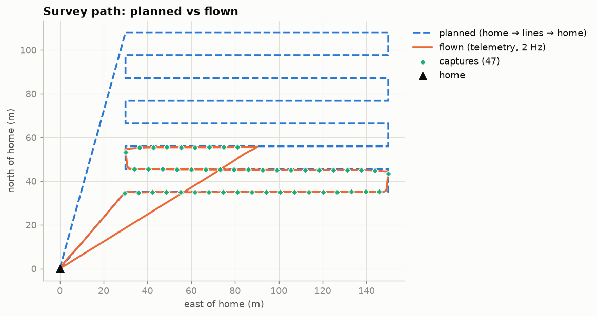
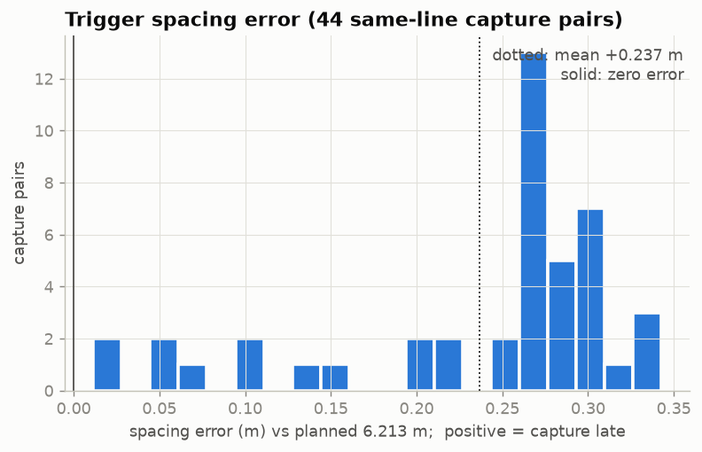
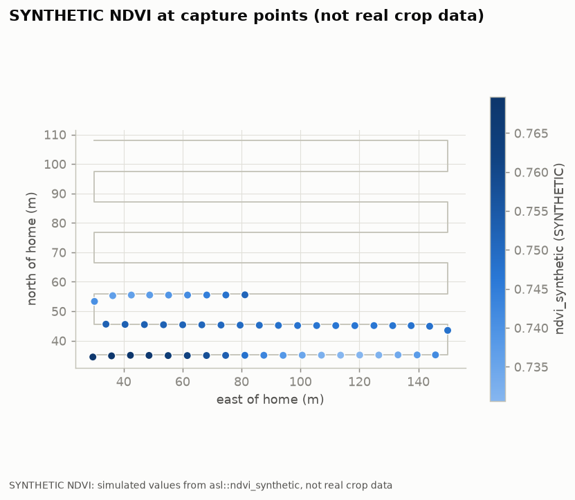

Outcome: aborted by autopilot (mode Hold at item 5/16), landed. Simulation (PX4 SITL + Gazebo).
SYNTHETIC NDVI: simulated values from asl::ndvi_synthetic, not real crop data
| outcome | aborted by autopilot (mode Hold at item 5/16), landed |
|---|---|
| px4_version | 1.18.0 (789389fd4) |
| mavsdk_version | v4.1.0 |
| waypoints | 16 |
| survey_lines | 8 |
| line_spacing_m | 10.39230485 |
| trigger_distance_m | 6.213203436 |
| planned_path_m | 1191.026605 |
| flown_path_m | 468.5 |
| airborne_s | 145.6 |
| captures | 47 |
| capture_lines | 3 |
| queue_drops | 0 |
| spacing_pairs | 44 |
| spacing_abs_mean_m | 0.237 |
| spacing_abs_p95_m | 0.328 |
| spacing_abs_max_m | 0.343 |
| spacing_signed_mean_m | 0.237 |
| events | 35 |
| failsafe | aborted by autopilot (mode Hold at item 5/16) |
| ndvi_synthetic_min | 0.7306 |
| ndvi_synthetic_max | 0.7697 |
| ndvi_note | SYNTHETIC NDVI: simulated values from asl::ndvi_synthetic, not real crop data |



| t (s) | event | detail |
|---|---|---|
| 0.8 | mode | Hold |
| 0.8 | armed | no |
| 0.8 | landed_state | Unknown |
| 0.8 | gps_fix | No Gps |
| 1.3 | command | arm |
| 1.3 | command | takeoff |
| 1.3 | landed_state | On Ground |
| 1.3 | gps_fix | Fix 3D |
| 1.3 | battery | >= 100 % |
| 1.8 | mode | Takeoff |
| 1.8 | armed | yes |
| 1.8 | global_position | ok |
| 1.8 | local_position | ok |
| 1.8 | home_position | ok |
| 1.8 | mission_item | 0/16 |
| 2.8 | battery | >= 90 % |
| 3.8 | landed_state | Taking Off |
| 8.8 | battery | >= 80 % |
| 14.8 | battery | >= 70 % |
| 20.8 | battery | >= 60 % |
| 21.8 | command | start_mission |
| 22.8 | mode | Mission |
| 22.8 | landed_state | In Air |
| 26.8 | battery | >= 50 % |
| 33.8 | mission_item | 1/16 |
| 58.9 | mission_item | 2/16 |
| 61.9 | mission_item | 3/16 |
| 87.9 | mission_item | 4/16 |
| 90.9 | mission_item | 5/16 |
| 103.9 | mode | Hold |
| 106.9 | failsafe | aborted by autopilot (mode Hold at item 5/16) |
| 108.9 | mode | Return To Launch |
| 129.9 | landed_state | Landing |
| 156.9 | landed_state | On Ground |
| 156.9 | outcome | aborted by autopilot (mode Hold at item 5/16), landed (exit 6) |